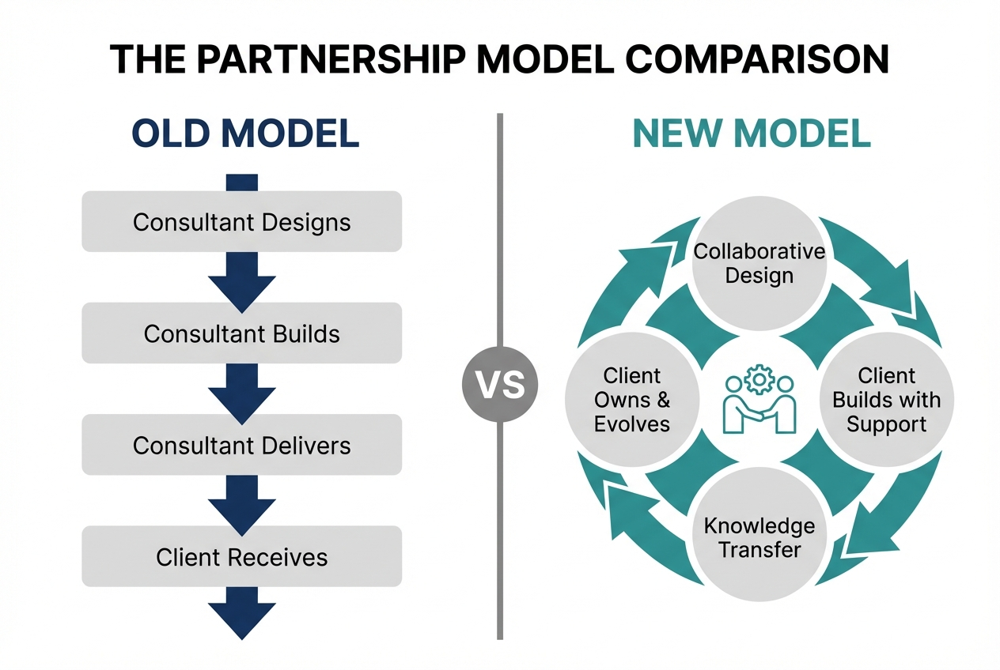
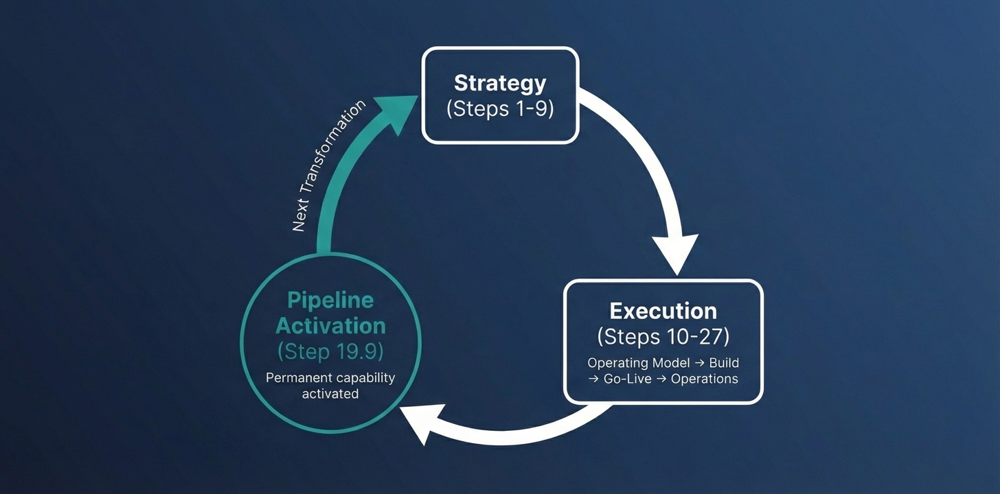

*For organisations with a GO decision, ready to execute*
Most Transformations Fail at Execution.
Yours Won't.
OpsMax-360 takes you from GO decision to transformation complete—360 days of continuous support, governance, and capability building across all 27 O2O steps. This is where transformation becomes permanent capability.
For organisations with a Throughput-90 GO decision.
Custom scoped. Starting at £15,000.

A GO Decision Isn't a Guarantee
Congratulations on your GO decision.
That took real work. You built your Strategy Assessment. You validated your strategy, platform approach, ecosystem model, and execution readiness. You went through the gate with confidence.
Now here's the part nobody wants to talk about:
Not because the decision was wrong. But because execution is a different animal entirely.
Consider what happens after GO:
- The strategy that looked clear in theory meets messy reality
- The team that was aligned on paper starts pulling in different directions
- The platform implementation hits unexpected dependencies
- The change management that seemed planned starts slipping
- The governance that worked in planning mode can't keep pace
70% of transformations fail. And most of them had a GO decision that made sense.
The difference between the 70% who fail and the 30% who succeed isn't the quality of the decision. It's what happens for the 360 days after.
From GO to Operations. The Complete Journey.
The O2O framework has 27 main steps + 18 sub-steps = 45 total. OpsMax-360 covers all of them.
✓ Part 1: Strategy (Steps 1-9) — COMPLETE
Via Throughput-90: Strategy foundation and GO decision
Part 2: Operating Model (Steps 10-18)
Change context, goals, platform objectives, change management structure
Part 2a: Execution (Steps 18.1-18.9)
Business baselining, requirements, solution design, build, test, rollout, handover
Part 3: Operations (Steps 19-27)
Operations context, platform lifecycle, change governance
Part 3a: Operations Detail (Steps 19.1-19.9)
Capability stabilization, throughput optimization, continuous improvement
The Continuous Transformation Flywheel
At Step 19.9, OpsMax-360 activates the flywheel. Your organisation develops permanent capability—not just a completed project, but an operating system for ongoing change.

360 Days. Four Phases. One Outcome.
Strategy Mastery
Steps 1-9 | Your Foundation, Validated
Your GO decision came from Throughput-90. Q1 validates and strengthens that foundation with executive-level context validation, platform strategy lock, and team mobilization.
Outcome: Locked strategy, mobilized team, active governance
Portfolio Execution
Steps 10-18 | Your Operating Model
Q2 builds your operating model for change delivery: programme context, platform objectives, change management structure, and execution readiness.
Outcome: Operational programme structure ready for delivery
Delivery Excellence
Part 2a: Steps 18.1-18.9 | Your Transformation, Delivered
Q3 is where the rubber meets the road: business baselining, solution design and build, testing, go-live preparation, rollout execution, and handover.
Outcome: Successful go-live, operations ready to take over
Operations & Flywheel
Parts 3 & 3a: Steps 19-27 + 19.1-19.9 | Permanent Capability
Q4 embeds capability permanently: operations stabilization, throughput optimization (TOC methodology), continuous improvement, and flywheel activation.
Outcome: Permanent transformation capability, flywheel active
Ready to Execute?
OpsMax-360 starts at £15,000 for standard scope. For complex transformations requiring expanded support, we'll discuss scope adjustments after your initial purchase.
Start Your Transformation
Secure your place and begin the transformation journey. Your dedicated success manager will contact you within 24 hours to discuss scope and customisation.
Begin OpsMax-360 - £15,000Starting price | Scope adjustments available after purchase
Prefer to discuss first? Book a call or email us.